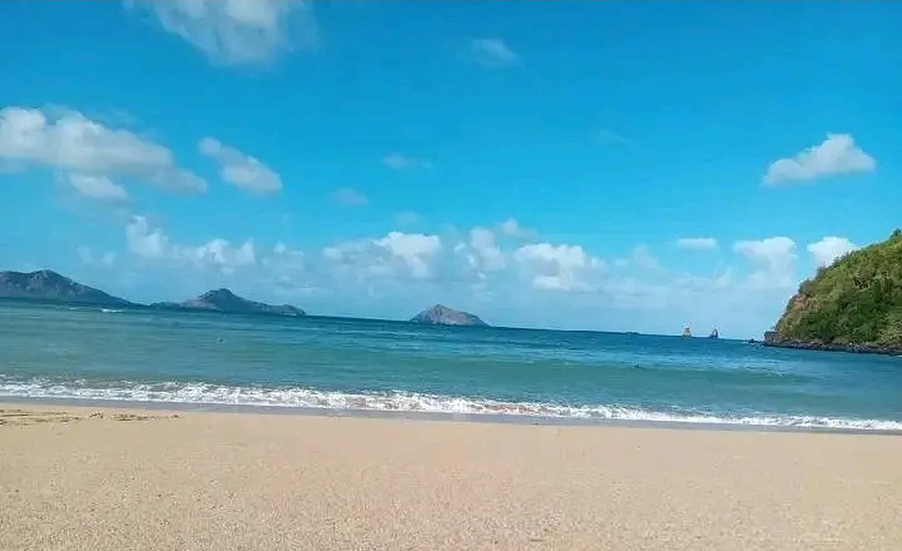

MoheliGoTRAVERSÉES MARITIMES
MOHÉLI · GRANDE COMORE
TU N’ES QU’ÀUNE TRAVERSÉE.
Elle est là, en face.
Ta place se prend depuis ton téléphone.
RÉSERVE TA TRAVERSÉE
TRAVERSÉES MARITIMES DES COMORESmoheligo.com
